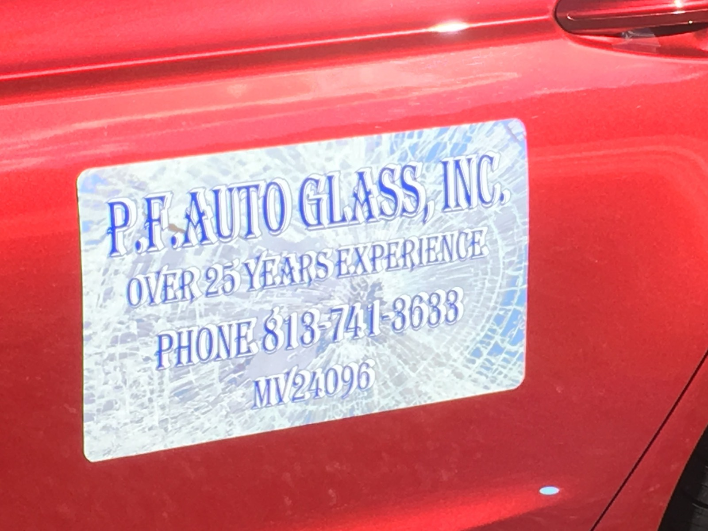
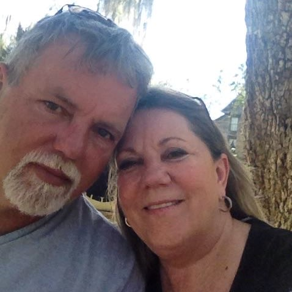
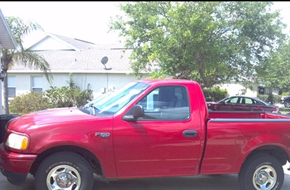
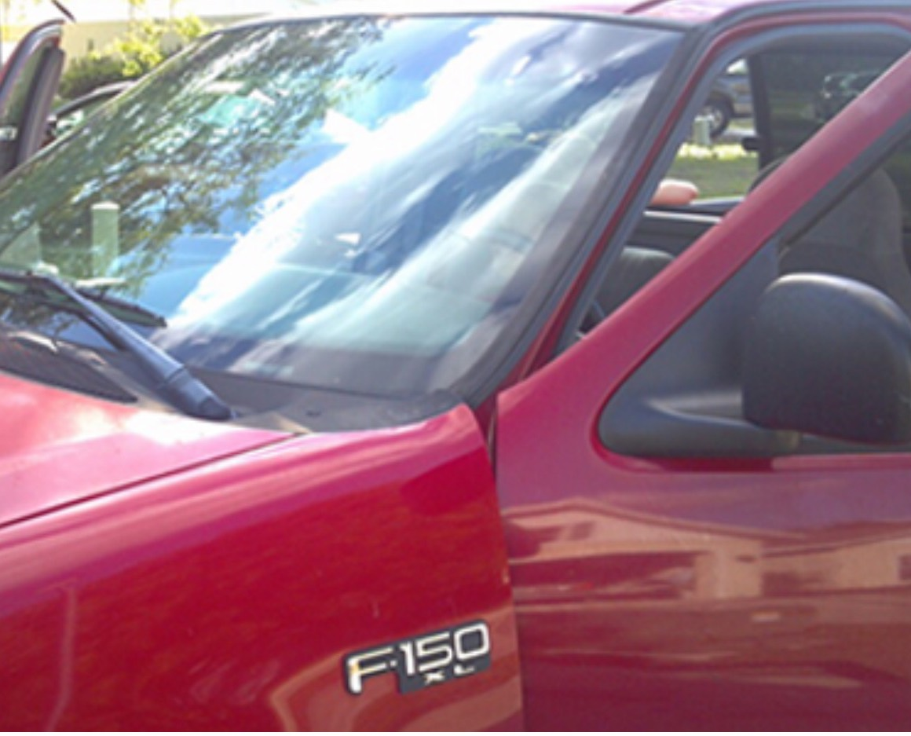
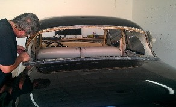
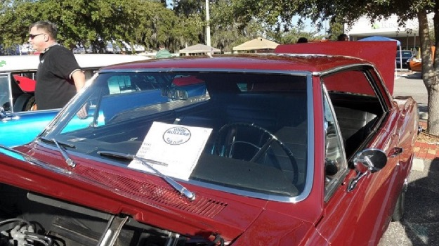

Mobile auto glass · Hillsborough County · Tampa Bay
Cracked glass?We come to you.
Windshield replacement, chip repair and car window repair in your driveway or your work parking lot. New OEM glass only, help with your insurance claim and a lifetime warranty for as long as you own the vehicle.
Mon – Fri · 8:00 am – 5:00 pm · by appointment
01 / What we fix
Every piece of glass in your car. And the parts that move it.
Windshield replacement
New glass that meets or exceeds the manufacturer’s specs, OEM sealants and adhesives. Never used glass.
DetailsWindshield & chip repair
Chips and small damage repaired before they turn into a full replacement.
DetailsDoor, side & vent glass
Door windows, side windows and vent windows for cars, SUVs, vans and trucks.
DetailsRear window replacement
Back glass replaced, including defroster tabs, for domestic and foreign makes.
DetailsPower windows & door mechanics
Window motors, regulators, switches, door locks and leaks from wind, water and noise.
DetailsRecalibration
Cameras and sensors behind the windshield reset at our Tampa service center.
Details02 / Florida insurance
With comprehensive coverage, the deductible can be waived in most cases.
We’ve been a preferred vendor of insurance companies for years. We set up a 3-way call with you and your insurer, help you file the claim correctly and aim to bring your cost down to zero.
- Lynx Network
- Safelite Glass Network
- Gerber National Glass
- Mercury Glass Network
- Progressive
- Allstate
- State Farm
- Travelers
- and all major insurers
Windshield + comprehensive
Most Florida carriers cover windshield repair and replacement with no deductible. Our aim is to provide our service without any out-of-pocket cost to you.
Side, rear or sunroof + comprehensive
You pay your deductible, and insurance covers the rest.
No comprehensive coverage
You pay the bill yourself. Call us for a free quote over the phone.
03 / How it works
From the first call to driving home.
Call or send the form
We start your insurance claim and verify what your vehicle needs.
We book the right parts
Your service call is set once quality OEM parts are confirmed. Typically within 48 hours.
The technician calls ahead
We meet you at home, at work or any place you choose in our service area.
About 40 minutes on site
Then roughly an hour for the adhesives to cure. Ready when you drive home.

04 / Family owned & operated
Pat & Donna Fore. Native Hillsborough County locals.
In 1994 Timothy (Pat) and Donna Fore started PF Auto Glass as a local windshield repair business in Riverview, Florida. In 1997 they incorporated as PF Auto Glass, Inc.
Pat is the company’s Chief Technician. Before opening his own business he spent seven years doing auto glass work across Hillsborough County. Today he has more than 30 years in the industry and still focuses on one thing: results that are equal to new.
Donna runs the business side and has given years to the community. She was the Greater Riverview Chamber of Commerce Volunteer of the Year in 2008 and Business Person of the Year in 2009. PF Auto Glass was voted the Chamber’s Business of the Year in 2018.
- Hillsborough Lic. MV24096
- Insured & workers’ comp
- BBB rating A+
- Lifetime warranty
05 / From our files
Daily drivers, work trucks and classics.





06 / Service area
All of Hillsborough County. Plus Lakeland and parts of Pasco.
Free mobile service within our service area. Not sure if you’re inside it? Call (813) 741-3633 and we’ll check.
- Tampa
- Brandon
- Riverview
- Valrico
- FishHawk
- Lithia
- Seffner
- Dover
- Plant City
- Temple Terrace
- Carrollwood
- Lutz
- Land O’ Lakes
- Wesley Chapel
- Zephyrhills
- Apollo Beach
- Ruskin
- Sun City Center
- Gibsonton
- Wimauma
- Lakeland
07 / Questions
Straight answers.
Does Florida insurance cover a cracked windshield?
For Florida residents with comprehensive insurance, most auto insurance carriers cover windshield repair and replacement with no deductible. For side, rear or sunroof glass, the deductible applies. Without comprehensive coverage, you pay the full bill.
Where do you do the work?
We come to you: your workplace parking lot, your driveway, your garage or another place you choose in our service area. Windshields on newer vehicles may need calibration, which is done at our Tampa service center.
How long does a windshield replacement take?
About 40 minutes, plus about an hour for the adhesives and glues to cure. The car is ready when you drive home at the end of the day.
Do you use new glass?
Yes, only new glass that meets or exceeds the vehicle manufacturer’s specifications, with OEM parts, sealants and adhesives. We never install used glass.
What warranty do I get?
A full lifetime warranty on work and materials, for as long as you own the vehicle. If a problem comes up, we follow up within 24 hours as a priority call.
How can I pay?
Cash, check, Visa and MasterCard.
08 / Quick service
Tell us about the glass. Pat or Donna will call you back.
- (813) 741-3633Cell (813) 748-7595
- contact@pfautoglass.com
- Mon – Fri · 8:00 am – 5:00 pmBy appointment only
- Service center (recalibrations)501 S. Faulkenburg Rd, Unit D5-D6, Tampa, FL 33619 · Open in Google Maps